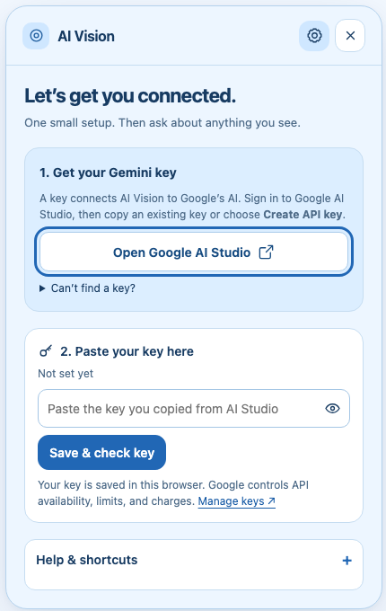

How to get a Gemini API key for AI Vision
By AI Vision project · Updated
To use AI Vision, create a Gemini API key in Google AI Studio, paste it into Settings, and save it. The key stays in your Chrome profile and is never entered on this website.

1. Create or find your key
- Open Google AI Studio’s API Keys page and sign in with the Google account you want to use.
- If this is your first visit, complete Google’s account setup and review its terms. Google may create a default project and key for a new user.
- If you see an existing key, use its copy control. Otherwise, choose Create API key and select the project you want to use. If Google asks you to create a project, follow its project setup steps.
- Copy the key and return to the Chrome tab where you want to use AI Vision.
Already have a Google Cloud project but cannot see it? In AI Studio, open Dashboard → Projects → Import projects. Select and import your project, then return to API Keys. Google documents this flow in its official API key guide.
2. Save the key in the extension
- Install AI Vision from the Chrome Web Store. Open Chrome’s Extensions menu and pin AI Vision if you want the toolbar shortcut.
- Open a normal webpage, click AI Vision, and open Settings. The Web Store itself is restricted, so finish setup from an ordinary page.
- Paste the key into the Gemini API key field and save it. A saved key means it is stored in Chrome; a successful request confirms that Google accepted the key and project.
- Return to the page you want to understand, leave the public Capture mode selected, drag over an area, and type a question or choose Explain. The v2.8 preview uses newer setup labels, but the public v2.5 flow does not require them.
Paste your key only into the extension’s Settings. This website does not accept keys, and AI Vision does not need a separate account. See how AI Vision stores and uses your key, then follow the screenshot text extraction guide if your first task is copying words from an image.
3. If something gets stuck
“Create API key” is unavailable
Your account may lack permission for the selected project. Check that you chose the intended account and project. For a managed work or school project, ask its administrator for help rather than changing organization settings.
The key is rejected
Copy the complete key again, without quotation marks, and replace it in Settings. An older key may need migration to Google’s current authorization-key format; follow Google’s current key guidance. Never post your key in a bug report.
The key saves but does not connect
Check your internet connection and try Check connection again in the updated build. The model check does not erase your saved key. If it lists no compatible models, verify project access in AI Studio.
A model is unavailable
Open Settings and refresh the available models by reopening the panel or checking the connection. Choose another available model under model preferences. Different projects may have different model access.
Understand free usage and API limits
AI Vision is free to install. Gemini API access is governed by Google’s project, model, and billing rules. A free tier may be available, but it has limits. Review the billing guide before enabling paid usage.
A quota or rate-limit error does not necessarily mean your key is wrong. Wait before trying again and check your project’s usage in AI Studio. Google applies limits per project, so creating another key in the same project does not reset them. See Google’s rate-limit documentation.
Try your first question
Keep the first request small: one screenshot, one question. Follow the screenshot explanation guide, then try summarizing a webpage or comparing related tabs.